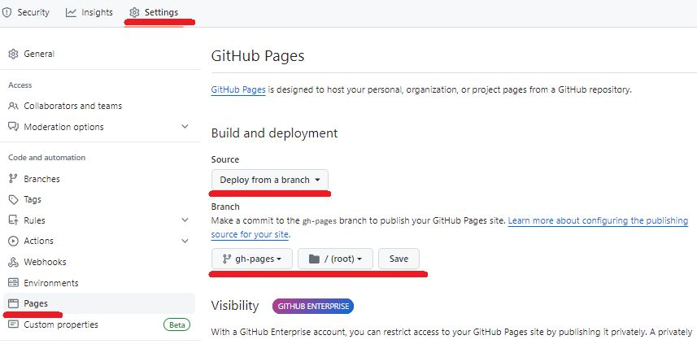

Brew in the Cloud#
In this homework, you will extend your previous project “Brew & Save” by moving beverage ingredient data — base beverages, creamers, and syrups — from static .json files to the Firebase Firestore cloud database. You will also learn how to load and persist beverage data using Firestore and display it dynamically in your Vue application.
Objectives#
Configure Firebase and connect your Vue app to Firestore
Load base ingredients (bases, creamers, syrups) from Firestore
Save user-created beverages to Firestore
Dynamically display all saved beverages from Firestore
Strengthen your understanding of state management with Pinia
Instructions#
Accept your instructor’s GitHub Classroom invitation to create your project repository.
You may copy all necessary code from your previous project “Custom Drink Maker”, excluding the .json files in the data/ folder.
Firebase Setup
Follow the exercise on the last page of this Firestore slide.
Create your Firebase project and register your web app.
Copy your Firebase config into the
firebase.tsfile provided in your repository.
Firestore Initialization
Set up the following Firestore collections and documents using following data:
basescollection[ { "id": "b1", "name": "Black Tea", "color": "#8B4513" }, { "id": "b2", "name": "Green Tea", "color": "#C8E6C9" }, { "id": "b3", "name": "Coffee", "color": "#6F4E37" } ]
creamerscollection[ { "id": "c1", "name": "No Cream", "color": "transparent" }, { "id": "c2", "name": "Milk", "color": "AliceBlue" }, { "id": "c3", "name": "Cream", "color": "#F5F5DC" }, { "id": "c4", "name": "Half & Half", "color": "#FFFACD" } ]
syrupscollection[ { "id": "s1", "name": "No Syrup", "color": "transparent" }, { "id": "s2", "name": "Vanilla", "color": "#FFEFD5" }, { "id": "s3", "name": "Caramel", "color": "#DAA520" }, { "id": "s4", "name": "Hazelnut", "color": "#6B4423" } ]
Pinia Store Updates
Implement the
init()action in the Pinia store (beverageStore.ts) to:Load data from
bases,creamers, andsyrupscollections in FirestoreSet this data to the store’s
bases,creamers, andsyrupsstatesSet default values for
currentBase,currentCreamer, andcurrentSyrup
Run
init()before rendering the app.
Beverage Creation and Display
Implement the
makeBeverage()action in the store:When the
"Make Beverage"button is clicked, store the current beverage in the Firestorebeveragescollection.
Display saved beverages in
<div id="beverage-container">:List all beverages from Firestore as radio buttons.
When selected, use the
showBeverage()action to display the selected beverage in the mug.
Expected Outcome#
Grading Rubric#
Grading Item |
Points |
|---|---|
Task 1: Firebase Setup |
10 |
Task 2: Firestore Initialization |
20 |
Task 3: Implementing init() and State Management with Pinia |
30 |
Task 4: Beverage Creation and Dynamic Display from Firestore |
30 |
GitHub Clone, Commit, Push, & Deploy to GitHub Pages |
10 |
Deliverables#
Deploy your web application using the following commands in your
terminal:npm run build npm run deploy
Github Page Setup
Set up your GitHub repository for GitHub Pages deployment. Follow the steps shown in the image below: .
Your web application will be accessible at the URL: gvsu-cis371.github.io/YOUR-REPO
Submit the URL of your GitHub Page in Blackboard.